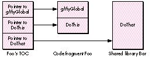
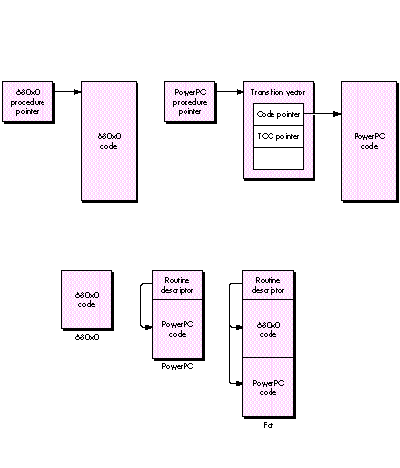

A new format for standalone code in the PowerPC world brings increased functionality
and easier implementation. You'll no doubt want to port existing code resources and
write plug-ins for the new platform. Here you'll learn how to do both while also
retaining or building in the ability to run the standalone code on the old 680x0
platform.
Standalone code is an important part of the Macintosh environment and will continue to
be in the age of the PowerPC processor. Such code takes many different forms and
serves many different purposes. It can serve as a definition function -- such as an
MDEF or a WDEF -- for Macintosh system software, act as a dynamic extension to an
application, or find other, more esoteric uses. In the PowerPC world, it can also be
used to port time-critical portions of an application written in 680x0 code.
This article shows you how to develop and package standalone code modules to run in
both the PowerPC and 680x0 worlds. We start by discussing the differences between
standalone code in the two runtime environments. Then we go through the steps of
compiling, linking, and packaging different types of standalone code, and calling it
from within your application. We look at the following:
SuperSort, the plug-in, and the WDEF, along with their source code, are all on this
issue's CD. All the code can run on either the 680x0 or the PowerPC platform,
although you do need MPW to compile it.
This article assumes that you know how to write a standalone code resource for the
680x0 platform and that you have a general grasp of PowerPC technology and runtime
architecture.
The format of standalone code has changed in the PowerPC world. Standalone code in the
680x0 world is packaged in resources such as WDEFs and INITs, with limited
functionality and significant restrictions on their implementation. PowerPC
standalone code, on the other hand, can be packaged as a resource or stored in the data
fork of a file and enjoys a more flexible and powerful mechanism for managing global
data and importing and exporting functions based on shared libraries.
STANDALONE CODE IN THE 680X0 WORLD
In the 680x0 world, developers can write two types of code: applications and
standalone code. Applications have special privileges that aren't available to
standalone code. Perhaps the most notable is the ability to easily access global and
static data via the A5 world. The A5 register is maintained by the Process Manager for
each application, to facilitate access to the QuickDraw global data as well as application
global and static data. All references to global and static data by the application are
made via the A5 register.
By contrast, standalone code resources have no A5 world and therefore don't have
access to global or static data. This can limit the functionality of the code. There are
mechanisms to get around this limitation, but they differ from one environment to the
next. THINK C has a mechanism for using A4 as a pointer to global data for standalone
code, while MPW uses special functions and macros to create a pseudo A5 world for the
code resource. Both of these place a burden on developers by forcing them to set up and
restore the appropriate registers before they can access their globals.
STANDALONE CODE IN THE POWERPC WORLD
In the PowerPC world, there's only one type of code, known as acode fragment . A code
fragment is a collection of code and its corresponding data. Fragments can be packaged
in a number of different kinds of containers. A PowerPC application consists of one or
more code fragments packaged in the data fork of the application. Part of the Macintosh
system software consists of code fragments packaged in the Macintosh ROM. Standalone
code is really just another code fragment packaged in a resource or in the data fork of a
file.
Whether standalone code is packaged in a resource or in the data fork depends on how
it's being used. If you're writing a PowerPC version of an existing code resource such
as a WDEF or an XCMD, the standalone code should be packaged in a resource, for
purposes of compatibility. (The existing code only knows to look for code in resources
of a specific type; for example, the Window Manager only looks for window definition
functions in resources of type 'WDEF'.) If, on the other hand, you're developing a new
standalone code module as a plug-in or to accelerate some part of your application, the
standalone code should be stored in the data fork of your application or plug-in file to
fully exploit the PowerPC runtime environment. Code can be loaded rapidly and
efficiently from the data fork of a file without using a large memory footprint, thanks
to the mechanism of file- mapped virtual memory.
Fragments can export symbols (code or data) by name to other fragments and can
import symbols by name from other fragments. Each fragment contains an array of
pointers known as thetable of contents (TOC), which allows the fragment to share
symbols with other fragments and is used to reference the fragment's own global and
static data. Each entry in the TOC is a reference to either an imported symbol from
another fragment or a static data item in the fragment itself. For example, suppose the
code fragment Foo exports a procedure DoThis, contains a single global variable
gMyGlobal, and imports a function DoThat from the shared library Bar. The TOC will
contain an entry for each one of these symbols (DoThis, DoThat, gMyGlobal), and each
entry will point to the address of the corresponding symbol, as shown in Figure 1.

Figure 1 A Fragment's Table of Contents
The R2 register in the PowerPC processor is dedicated to storing the currently active
TOC and thus is sometimes called the RTOC. The RTOC is saved, modified, and restored
each time a new fragment is invoked. Because the TOC allows references to global and
static data, it's analogous to the A5 world in the 680x0 environment. However, it's
important to emphasize that in the 680x0 environment only applications have an A5
world and easy access to global and static data, while in the PowerPC environment, all
fragments have a TOC and easy access to global and static data. So the great thing about
standalone code being handled as a code fragment is that you can have globals in your
WDEFs, INITs, and plug-ins without having to jump through any hoops at all!
Because a fragment can contain symbols from other fragments, these symbols must be
resolved or bound at run time. This preparation is performed by the Code Fragment
Manager. In most cases, such as when a PowerPC application is loaded, this is done
transparently. Standalone code can be automatically prepared by the Mixed Mode
Manager, but the preferred method is to have your application call the Code Fragment
Manager directly. Fortunately, the Code Fragment Manager makes this an easy task, as
we'll see later. Once a fragment has been prepared, the Code Fragment Manager
returns a connection ID to identify the fragment. This connection ID is used when
unloading the fragment, similar to a refNum that's returned when opening a file and
later used to close the file.
The Code Fragment Manager has the ability to resolve symbols by name, so you can
export any routine or data by name and then import that symbol in another fragment.
This allows you to store multiple routines in your fragment, export them, and then
call each routine when necessary by asking the Code Fragment Manager for its address.
This is much nicer than having a dispatch-based, single- entry-point code resource as
we do in the 680x0 environment.
CALLING STANDALONE CODE
At any given time a PowerPC processor-based Macintosh may be executing in the
native PowerPC runtime architecture or in an emulated 680x0 runtime architecture.
The switching between the two runtime environments is transparent and handled by
the Mixed Mode Manager. And thanks to the Mixed Mode Manager, code from one
instruction set can call code from another instruction set, which is just what happens
when a 680x0 application calls a standalone code module written in PowerPC code or a
native PowerPC application calls a standalone code module written in 680x0 code.
So whenever we're running on a PowerPC processor-based Macintosh and our
application calls standalone code, we're presented with an interesting problem. Given a
pointer to standalone code, how do we know what kind of code it points to? In the
680x0 world, a procedure pointer is simply the address of a procedure. But in the
PowerPC environment, a procedure pointer is actually the address of a transition
vector, which in turn contains pointers to the actual routine and the TOC for the
fragment. Figure 2 shows the difference.
To solve this problem, the Mixed Mode Manager creates a generic procedure pointer
known as a UniversalProcPtr (UPP). A UPP can point to one of two things: a 680x0
procedure (in which case the UPP is really just a 680x0 ProcPtr in disguise) or a
routine descriptor (data type RoutineDescriptor). A routine descriptor is a data
structure that describes the instruction set,parameters, and calling convention of the
routine. The Mixed Mode Manager looks at the routine descriptor to determine whether
a mode switch is necessary and, if so, how to perform the switch.
To run in a PowerPC environment, we use a UPP anywhere we would formerly have
passed a ProcPtr, such as in specifying a dialog filter procedure. In the case of 680x0
standalone code (which typically is stored in a resource), we indirectly pass a
ProcPtr, and thus a UPP, to the calling routine via the handle to the resource. For a
PowerPC code resource (or for a "fat" resource), we have to replace this ProcPtr
with a UPP, which points to a routine descriptor describing the routine in our code
resource. Figure 3 compares the forms taken by the three different kinds of code
resources (680x0, PowerPC, and fat).
Now that you have the necessary background information on standalone code, we can
move on to demonstrate how to handle three different types of standalone code: a
universal plug-in module, a module to port time-critical code, and a fat resource.

Figure 2 680x0 and PowerPC Procedure Pointers Compared
Figure 3 Forms of Code Resources Compared
Plug-ins are a popular way for third-party developers to extend the functionality of
an application. To demonstrate how to create and support a universal plug-in module
-- one that will run in either the PowerPC or the 680x0 world -- we'll use the
example of a plug-in module for an application called SuperSort, which you'll find on
this issue's CD.
SuperSort is a simple application that visually sorts data represented as bars of
varying height according to a specified algorithm. SuperSort has two built-in
algorithms -- bubble sort and quick sort -- and can add new algorithms through a
plug-in mechanism. We'll compile and package a shell-sort algorithm into a plug-in
that will work with either the 680x0 or the PowerPC version of SuperSort. The
application will pick the correct version of the plug-in automatically at run time.
EXAMPLE CODE
Below is the code for our plug-in sort routine that implements the shell-sort
algorithm. ShellSort's data parameter is a pointer to the data to be sorted, the size is
the number of elements to be sorted, and the swap parameter is a callback procedure to
SuperSort to animate the sort.
#include "SortPlugIn.h"
#if powerc
#include <MixedMode.h>
ProcInfoType swapPI = kCStackBased
| STACK_ROUTINE_PARAMETER(1, kFourByteCode)
| STACK_ROUTINE_PARAMETER(2, kFourByteCode);
#endif
void ShellSort(DataPoint *data, short size, SwapProc swap);
void ShellSort(DataPoint *data, short size, SwapProc swap)
{
short i, j, incr;
incr = size / 2;
while (incr > 0) {
for (i=incr; i<size; i++) {
j = i - incr;
while (j >= 0) {
if (data[j].n > data[j + incr].n) {
#if powerc
// We must use CallUniversalProc since we will
// be passed a UPP for the SwapProc.
CallUniversalProc(swap, swapPI, &data[j],
&data[j + incr]);
#else
// If we're 680x0, we can just call the proc
// directly. MixedMode will handle switching if
// swap is a UPP.
(*swap)(&data[j], &data[j + incr]);
#endif
j -= incr;
} else
j = -1;
}
}
incr /= 2;
}
}
COMPILING, LINKING, AND PACKAGING
We execute the following commands to compile and link this procedure in order to
create the 680x0 version stored in a 'SORT' resource:
C ShellSort.c -o ShellSort.o
link -t 'rsrc' -c 'RSED' -m ShellSort -rt SORT=128 ShellSort.o∂
-o ShellSort.rsrc
We compile and link the procedure again to create the PowerPC version to be stored in
the data fork. The output of the PowerPC linker is known as an XCOFF (extended
common object file format) file. This is a bloated file that we then strip to turn into a
leaner file known as a PEF file (your guess as to what PEF stands for is as good as
any). Here are the commands:
PPCC -w conformance -appleext on -sym full ShellSort.c
-o ShellSort.c.o
PPCLink -main ShellSort -export ShellSort ∂
ShellSort.c.o ∂
"{PPCLibraries}"StdCRuntime.o ∂
"{PPCLibraries}"PPCCRuntime.o ∂
-o ShellSort.xcoff
makepef ShellSort.xcoff -e ShellSort ∂
-o ShellSort.pef
Now that we have the two pieces, we join them together:
duplicate -y -d ShellSort.pef ShellSort duplicate -y -r ShellSort.rsrc ShellSort SetFile ShellSort -t 'SORT' -c 'TimN'
The resulting file, ShellSort, is our plug-in that can be executed on either the 680x0
or the PowerPC platform. The code fragment that's stored in the data fork will be
loaded, prepared, executed, and unloaded by the PowerPC version of the SuperSort
application, while the code contained in the 'SORT' resource will be loaded, executed,
and unloaded by the 680x0 version.
CALLING THE PLUG-IN
When calling a universal plug-in, your native PowerPC application should first check
to see whether there's a code fragment in the data fork of the plug-in, using the Code
Fragment Manager routine GetDiskFragment. If so, the pointer returned by
GetDiskFragment can be used to call the module. If not, the application should then look
for the appropriate plug-in resource in the resource fork of the plug-in.
GetDiskFragment locates and loads a fragment found in the data fork of a file.
OSErr GetDiskFragment(FSSpecPtr fileSpec, long offset, long length,
Str63 fragName, Mask findFlags, ConnectionID *connID,
Ptr *mainAddr, Str255 errName);
The parameters are as follows:
| fileSpec | The file to check for a fragment |
| offset | Offset into the data fork where the fragment resides |
| length | The length of the fragment, in bytes |
| fragName | The name of the fragment, used for debugging only |
| findFlags | The operation to be performed on the fragment |
| connID | The fragment connection ID |
| mainAddr | The main entry point of the fragment |
| errName | The error string returned if the call fails |
Here's an example of how you might call a universal plug-in:
Handle myProcHandle;
MyProcType myProcPtr;
OSErr err;
ConnectionID connID;
err = GetDiskFragment(theFile, 0, 0, theFile.name, kLoadNewCopy,
&connID, &myProcPtr, errName);
if (err == noErr) {
/* We have a fragment, ladies and gentlemen! */
(*myProcPtr)(p1, p2, p3);
CloseConnection(connID);
} else
{
/* We have a resource. */
myProcHandle = Get1Resource(kMyCodeType, kMyCodeID);
if (myProcHandle != nil) {
HLock(myProcHandle);
myProcPtr = (MyProcType)*myProcHandle;
#if powerc
CallUniversalProc(myProcPtr, kMyProcInfo, p1, p2, p3);
#else
(*myProcPtr)(p1, p2, p3);
#endif
HUnlock(myProcHandle);
ReleaseResource(myProcHandle);
}
}
The address that's returned is whatever symbol was defined as the main entry point
during the linking of the PowerPC code. Because this is a true pointer to the routine
and not a routine descriptor, it can be dereferenced and called directly as with any
other ProcPtr you may be used to.
If your fragment has multiple entry points, you can use the Code Fragment Manager
function FindSymbol after loading the fragment via GetDiskFragment in order to locate
a particular symbol by name. The FindSymbol routine returns the address of the
symbol you request.
To port only time-critical portions of your application, you would use a technique
similar to the one just described. Factor out the code whose execution you want to
accelerate, create a fragment, and package the fragment in the data fork of your
application. In your application's initialization code, call the Code Fragment Manager
to get the entry point to this fragment from your application's data fork and store this
pointer. When you no longer need the pointer, call the Code Fragment Manager to close
the connection to the code fragment.
Your code fragment will need a routine descriptor as its main entry point since it will
be called from 680x0 code. To make a routine descriptor your main entry point,
declare a global routine descriptor in your code that describes the fragment's main
entry point. When you link the resulting object file, tell the linker to use this global
routine descriptor rather than the actual code entry point as the main entry point.
Here's an example of using a global routine descriptor as an entry point to a fragment:
RoutineDescriptor MyEntryPointRD =
BUILD_ROUTINE_DESCRIPTOR(kMyEntryPointProcInfo, MyEntryPoint)
When we go to link this code, we tell the linker that the main entry point is our
routine descriptor.
link -main MyEntryPointRD -export MyEntryPointRD {MyObject}
{MyLibs} ∂ -o {MyXCOFF}
Although existing resources can run on a PowerPC processor-based Macintosh thanks
to the 680x0 emulator, they run much more slowly than they would if they were
written in native PowerPC code. If you make an existing resource "fat," it will work
in either the 680x0 or the PowerPC environment and you won't need to ship two
different versions of your resource. For example, if you have a fat WDEF, the code will
run as usual on the 680x0 platform but will execute as native PowerPC code on the
PowerPC platform, with the Macintosh system software choosing the correct code at
run time.
CREATING A FAT RESOURCE
There's a template defined in MixedMode.r that allows easy creation of fat resources.
We'll create a fat resource version of a WDEF to show how it's done. We won't present
all of the code here but simply the steps involved in making the WDEF into a fat
resource. The code for the WDEF is on this issue's CD along with an application called
TestWDEF that shows the WDEF working.
Recall from our earlier discussion that we call a code resource through a ProcPtr,
which in this case is a dereferenced resource handle. That means that we need to create
a routine descriptor for our PowerPC version of the WDEF so that the Mixed Mode
Manager can invoke a mode switch, if necessary, when the system software calls the
WDEF. This is consistent with the requirement that all ProcPtrs be replaced with
UPPs in native PowerPC code.
Here's an example of a fat resource Rez definition:
#include "MixedMode.r"
type 'WDEF' as 'sdes';
resource 'WDEF' (128) {
0x00003BB0, // 680x0 ProcInfo
0x00003BB0, // PowerPC ProcInfo
$$Resource("WDEF.rsrc", 'oCod', 128),
// Name, type, ID of resource
// containing 680x0 code
$$Resource("WDEF.rsrc", 'pCod', 128)
// Name, type, ID of resource
// containing PowerPC code
};
The resource type 'sdes' is defined in MixedMode.r. The 'sdes' resource template
inserts into the start of your resource some 680x0 code that checks whether you're
running on a PowerPC platform. If so, it copies your PowerPC code to the start of the
resource data in memory and calls the PowerPC code via a UniversalProcPtr embedded
in the resource at the start of the PowerPC code. Once the PowerPC code has been
copied, each subsequent call to the resource goes straight to the PowerPC code,
bypassing the initial checks. If you're running on a 680x0 platform, the same process
occurs, but instead the 680x0 code is copied over the resource data in memory. All of
this is done transparently by the 'sdes' resource template.
CALLING THE FAT RESOURCE
If your fat resource was created using the template in MixedMode.r, you don't have to
change your calling code to execute the PowerPC code fragment. Calling PowerPC
standalone code is exactly the same as calling 680x0 code. Due to the magic of the fat
resource, the calling code doesn't have to know the PowerPC processor even exists. It
simply grabs the resource and calls it.
Here's what the code looks like:
Handle myProcHandle;
MyProcType myProcPtr;
myProcHandle = Get1Resource(kMyType, kMyID);
if (myProcHandle == nil) {
// Handle the error.
. . .
} else
{
HLock(myProcHandle);
myProcPtr = (MyProcType)*myProcHandle;
(*myProcPtr)(/* Params go here. */);
HUnlock(myProcHandle);
ReleaseResource(myProcHandle);
}
When this code is compiled into 680x0 code, the parameters are placed on the stack
and the actual routine is called via a 680x0 JSR(A0) instruction. When the JSR
instruction is executed, the pointer in A0 points to a routine descriptor, not to 680x0
code. This causes the emulator to invoke the Mixed Mode Manager, which then
performs the necessary context switch, automatically prepares the fragment for
execution, and calls the PowerPC code. Upon exit from the PowerPC code, the Mixed
Mode Manager performs a switch back to the emulated 680x0 environment and
execution continues as if the call were to 680x0 code. The calling code never knows the
difference.
Now that you've learned the basics of standalone code on the PowerPC platform, you can
start thinking about what you can do with your application or existing code resource to
exploit the speed of the PowerPC processor. A good exercise is to consult your favorite
algorithm book and create your own SuperSort plug-in using a different algorithm, or
to recompile your favorite WDEF or other code resource into a fat resource that you
can run on any Macintosh, whether PowerPC processor-based or 680x0-based.
Remember to package your new code fragments in the data fork, and your
recompilations of existing resources as resources. Then watch your creations take off!
REFERENCES
TIM NICHOLS (Internet tim.nichols@3do.com) says the eight years he spent earning
his bachelor's and master's degrees at UC Santa Barbara in between trips to the beach
were the best years of his life. At Apple, he was a member of the PowerPC software
team, where he developed some of the first PowerPC applications for demos and
performance evaluation. He now works at 3DO in their ROM/OS group doing drivers
and low-level system software. When not working, he plays softball and volleyball,
fueling his activity with pizza and burritos. *
For more on standalone code in the 680x0 world, see the Macintosh Technical
Note "Stand-Alone Code, ad nauseam " and the article "Another Take on Globals in
Standalone Code" in develop Issue 12 *
MixedMode.r is part of the Macintosh on RISC Software Developer's Kit, soon to be
available from APDA. *
For an overview of PowerPC technology and runtime architecture, see the article
"Making the Leap to PowerPC" in develop Issue 16 and the soon-to-be-available
Inside Macintosh: PowerPC System Software. *
For details on the shell-sort algorithm, see any book on algorithms, such as
Fundamentals of Computer Algorithms by Horowitz and Sahni or Data Structures and
Algorithms by Aho, Hopcroft, and Ullman.*
THANKS TO OUR TECHNICAL REVIEWERS Erik Eidt, Jim Gochee, Ed Navarrete,
Jim Reekes *